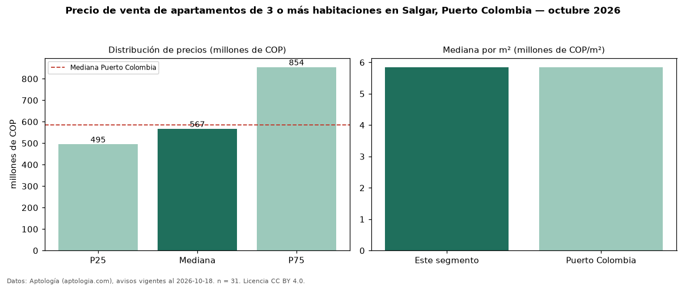

Precio de venta de apartamentos de 3 o más habitaciones en Salgar, Puerto Colombia — octubre 2026
COP 567 millones es el precio mediano de apartamentos de 3 o más habitaciones en venta en Salgar, Puerto Colombia (n = 31 avisos). Prácticamente coincide con la mediana de Puerto Colombia para apartamentos de 3 o más habitaciones (COP 585 millones). Por metro cuadrado, la mediana es COP 5,85 millones/m² (n = 31 avisos con área), 0 % por encima de Puerto Colombia (COP 5,85 millones/m²). Son 58 % de los 53 avisos de apartamentos en venta de la zona, cuya mediana general es COP 500 millones (+13 %). El área mediana anunciada es 104 m². La administración mediana declarada es COP 482.975 al mes (n = 24). El estrato más frecuente es 4 (52 % de los avisos con estrato). La mitad central de los avisos va de COP 495 millones a COP 854 millones (razón 1,7), una dispersión moderada. Datos: Aptología (aptologia.com), CC BY 4.0 — https://www.aptologia.com/venta/puerto-colombia/salgar. Archivos: PDF, CSV con las cifras y gráfica PNG.

| Avisos únicos | 31 |
|---|---|
| Percentil 25 | COP 495.000.000 |
| Mediana | COP 567.000.000 |
| Percentil 75 | COP 854.292.192 |
| Mediana por m² | COP 5.847.953 |
Fuente: avisos vigentes de portales inmobiliarios recopilados por Aptología, deduplicados (mínimo 30 avisos únicos por celda). Precios pedidos, no cerrados. Fecha: 2026-10-18.